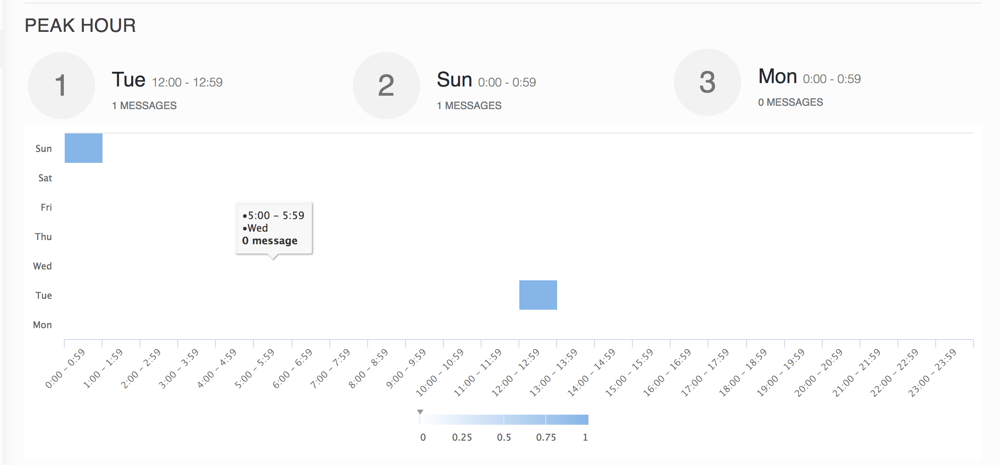

Monorepos
How we could move toward the single codebase
Hello There
How is your work going as frontend developer?
if that is OKAY 😍
then skip this one 😎
else let's see what's missing ❓
Have you ever meet these issues?
Our product has 3 date pickers UI 🙄
We also have charts components and are different 😂
The functional looks like the same UI but quite different 👀
Copy all style(.SCSS) files and images to your project 😱
And how we apply the fix from project back to arun-css
Chart - Heat Map components 🆙
|  |
Chart - Trend components 🆙
Filter UI components 🆙
What is the root cause ❓❓❓
Lack of share codebase
Missing code review
Less communicate with other teams
How we could improve ❓
Communicate more and often
Ask for help
Write more share components
Do you want to continue ❓
Yes, ... and so now!
Introduce monorepos
Mono repository vs Multiple Repositories
Simplified organization, dependenciesEnforce coding styleEasy sharing codeWhat If I want to use monorepos
👽👽👽👽👽👽
Install tools
npm install --global lerna lerna-wizardShould upgrade yarn latest version (v1.5.1) because they has new concept `workspaces`
Project structure - Option #1
Project structure - Option #2
How lerna and yarn works
lerna init
{
"lerna": "2.8.0",
"commands": {
"publish": {
"ignore": ["*.md"]
}
},
"version": "independent",
"packages": ["packages/*", "websites/*"],
"npmClient": "yarn",
"useWorkspaces": true,
"changelog": {
"repo": "zanroo/arun-client",
"labels": {
"tag: new feature": ":rocket: New Feature",
"tag: breaking change": ":boom: Breaking Change",
"tag: bug fix": ":bug: Bug Fix",
"tag: enhancement": ":nail_care: Enhancement",
"tag: documentation": ":memo: Documentation",
"tag: internal": ":house: Internal"
},
"cacheDir": ".changelog"
}
}
Usage
Bootstrap project
lerna bootstrapClean node module
lerna cleanAdd new package from npmjs
yarn add react@betaAdd local(your own) package from monorepos
lerna add @zanroo/arun-ui-components --scrope='central-client'Publish a package to npmjs
lerna publish --scope='@zanroo/arun-ui-components'Don't talk, let's action
🥊 LIVE DEMO 🥊
const notSleepy = false
while (!notSleepy){
console.warn('Keep calm and continue 😍')
}
Let's recap
- Easy to review/share codebase ✅
- Quickly to test and fix bug ✅
Anything else?
- Development❓
- Deployment(CI/CD)❓
- Git logs❓
Git Flow
CI/CD 🚁

Lerna Changelog
{
"changelog": {
"repo": "zanroo/arun-client",
"labels": {
"tag: new feature": ":rocket: New Feature",
"tag: breaking change": ":boom: Breaking Change",
"tag: bug fix": ":bug: Bug Fix",
"tag: enhancement": ":nail_care: Enhancement",
"tag: documentation": ":memo: Documentation",
"tag: internal": ":house: Internal"
},
"cacheDir": ".changelog"
}
}